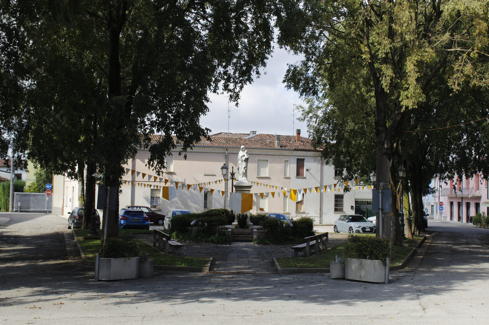
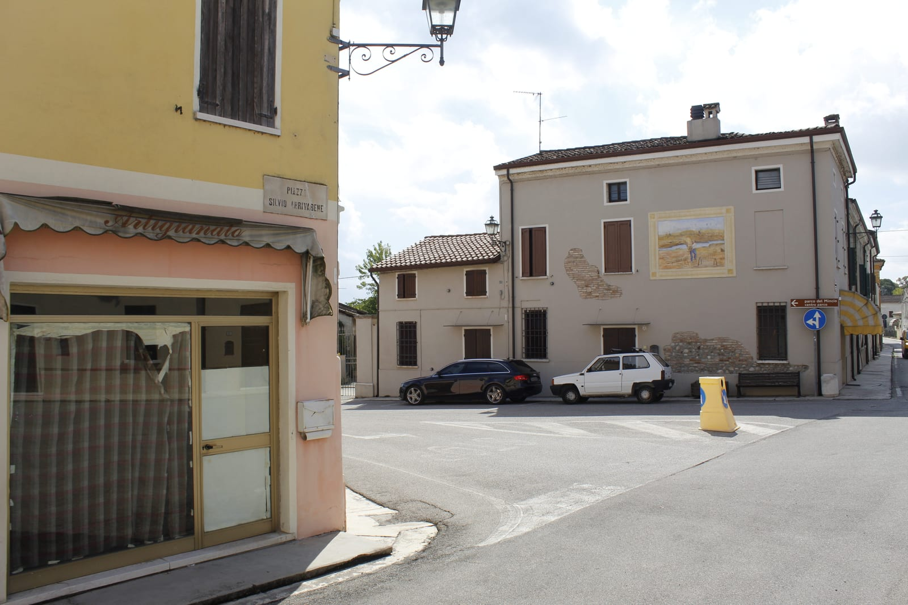
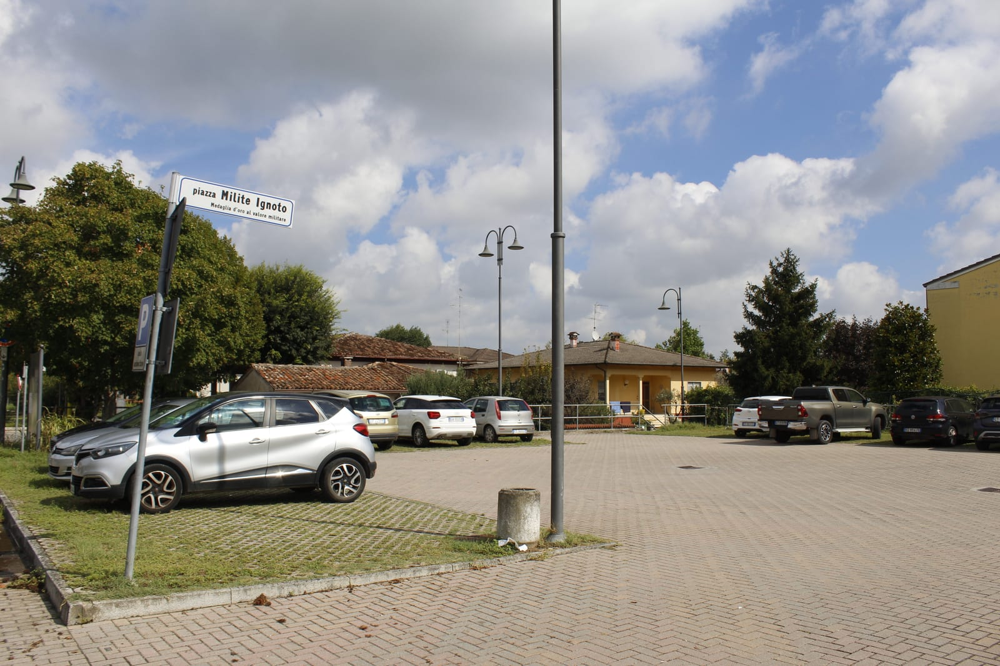
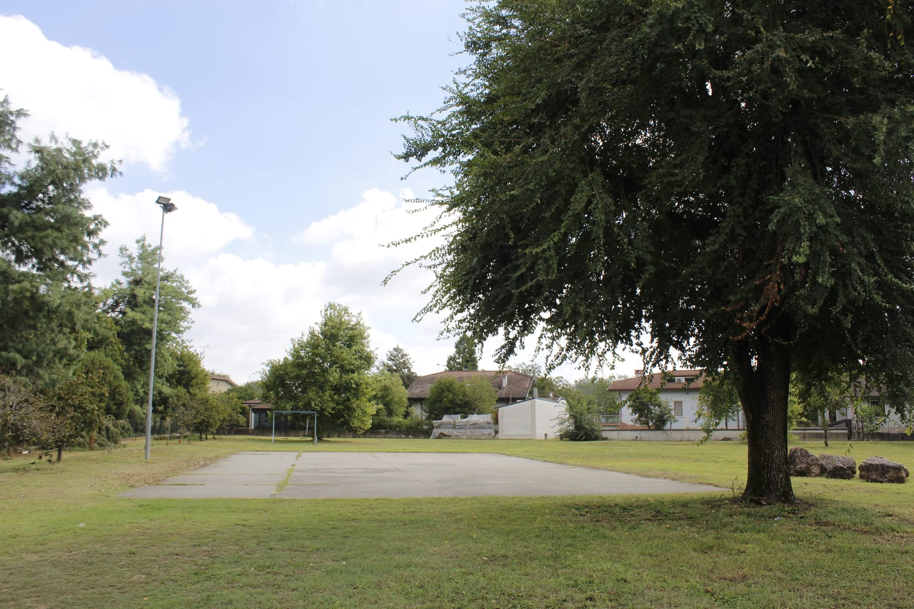
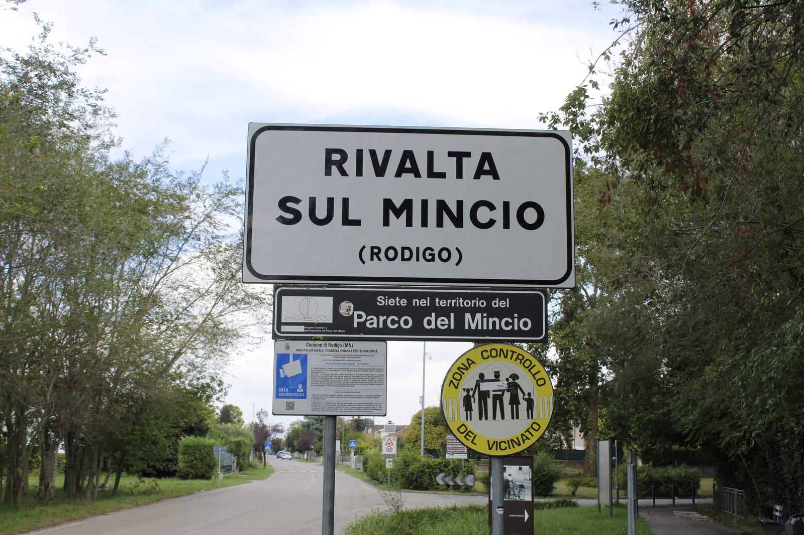
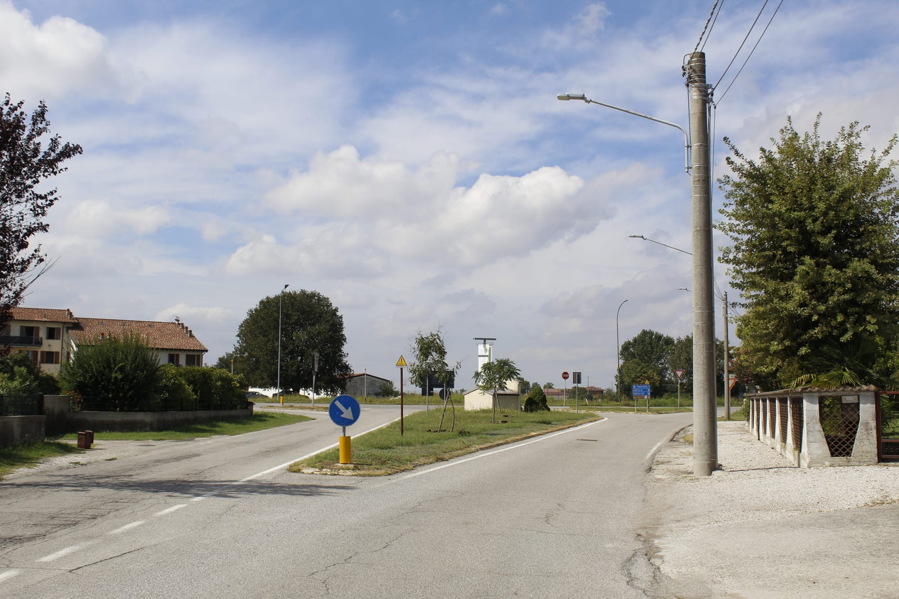
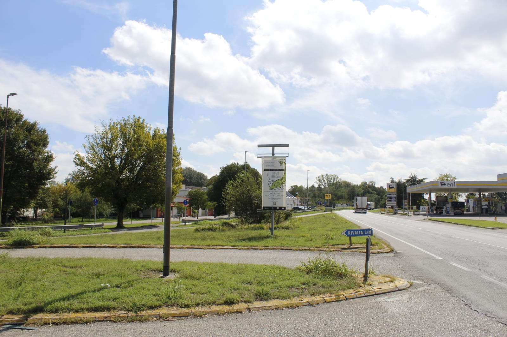
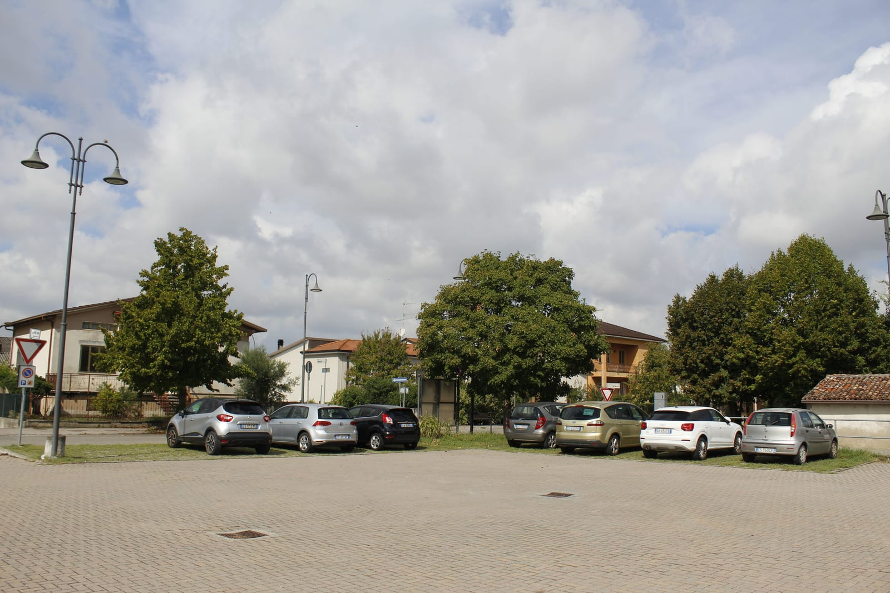

Muoversi
Settantaquattro assi viari denominati, 106 incroci, 14 rallentatori, 37 parcheggi — nessuno a pagamento — e una sola linea di autobus. Nessun semaforo, nessuna rotatoria dentro il paese.
Strade, vicoli, piazze
Dopo la tromba d'aria di venerdì 28 agosto il Comune di Rodigo ha chiuso strada Borghetto — un palo Enel in cemento abbattuto occupa l'intera carreggiata, in attesa dell'intervento Enel — e strada Camignana, per pericolo di caduta alberi e danni al fondo stradale. Massima prudenza su tutte le strade con alberi ad alto fusto. Aggiornamenti dal Comune.
Viabilità principale
| Strada | Ruolo |
|---|---|
| SP 23 Castellucchio–Goito (Strada Settefrati) | collegamento provinciale |
| SP 1 Asolana (Strada Francesca Est) | collegamento provinciale |
| Strada Panicella / Via Panicella | circonvallazione del paese, realizzata negli anni '70 |
| Via Francesca | asse storico nord-sud del paese |
Elenco completo delle vie mappate
Ordinate per distanza dal centro. SU = senso unico.
| Via | Tipo | Fondo | Limite | Note |
|---|---|---|---|---|
| Via Filippo Turati | residenziale | asfalto | 50 | SU · illuminata |
| Via Giuseppe Garibaldi | residenziale | asfalto | 30 | SU · illuminata |
| Via Zibramonda | residenziale | asfalto | — | SU · illuminata |
| Via Vittorina Gementi | residenziale | asfalto / masselli | — | illuminata |
| Via Luigi Morelli | residenziale | asfalto | — | SU · illuminata |
| Via Sette Frati | residenziale / non class. | asfalto | 50 e 30 | SU · illuminazione parziale |
| Via Ariello | residenziale | asfalto | — | illuminata |
| Via Walter Tobagi | residenziale | asfalto | — | illuminata |
| Via dei Cavatori | residenziale | asfalto | — | illuminata |
| Via Tertulliano Battisti | residenziale | asfalto | — | illuminata |
| Piazza Chiesa | living street | ghiaia / asfalto | — | illuminata |
| Via Tezzone | non classificata | masselli autobloccanti | — | SU |
| Via Belvedere | residenziale | asfalto | — | illuminata |
| Vicolo Luigi Guizzon | pedonale | masselli | — | non illuminato |
| Via Salvo D'Acquisto | residenziale | asfalto | — | illuminata |
| Via Antonio Gramsci | residenziale | asfalto | 50 | SU · illuminata |
| Via delle Arellaie | residenziale | ghiaia | 30 | — |
| Via Eugenio Curiel | residenziale | asfalto | — | illuminata |
| Via Don Arnaldo Bodini | residenziale | asfalto | 50 | illuminata |
| Vicolo Gilberto Pagliari | pedonale | asfalto | — | illuminato |
| Via Panicella | residenziale + raccordo | asfalto | 50 | SU · illuminata |
| Via Campino | residenziale | asfalto | — | SU · illuminata |
| Via Mezzadrelli | residenziale | asfalto | — | illuminata |
| Piazza Silvio Arrivabene | residenziale | asfalto | 50 e 30 | SU · illuminata |
| Via Giovanni Arrivabene | residenziale | asfalto | 30 | illuminata |
| Via Porto | residenziale | asfalto | — | SU · illuminata |
| Via della Libertà | residenziale | asfalto | — | illuminata |
| Via della Resistenza | residenziale | asfalto | — | illuminata |
| Via Madonnina | residenziale | asfalto | — | illuminata |
| Via Venticinque Aprile | residenziale | asfalto | — | — |
| Via Andrea Costa | residenziale | asfalto | — | illuminata |
| Via Fratelli Cervi | residenziale | asfalto | — | illuminata |
| Via Salvador Allende | residenziale | asfalto | — | illuminata |
| Via Virgilio | residenziale | asfalto | — | illuminata |
| Via Roccolo | residenziale | asfalto | — | illuminata |
| Via Francesca | residenziale + raccordo | asfalto | 30 | SU · illuminata |
| Via dei Pescatori | residenziale | asfalto | — | SU · illuminata |
| Via Due Giugno | residenziale | asfalto | — | illuminata |
| Via Papa Giovanni Paolo II | residenziale | asfalto | — | illuminata |
| Via Papa San Pio X | residenziale | asfalto | — | illuminata |
| Via Renzo Regattieri | residenziale | asfalto | — | illuminata |
| Via Pilota | residenziale | asfalto / erba | — | illuminazione parziale |
| Via Don Giovanni Minzoni | residenziale | asfalto | — | illuminata |
| Via Giacomo Brodolini | residenziale | asfalto | — | illuminata |
| Via SS. Patroni Vigilio e Donato | residenziale | asfalto | — | illuminata |
| Via Aldo Moro | residenziale | asfalto | — | illuminata |
| Via Renzo Ascari | residenziale | asfalto | — | — |
| Via Matilde di Canossa | residenziale | asfalto | — | SU · illuminata |
| Sottopasso (ciclabile) | ciclabile | cemento | — | illuminato |
| Via Don Primo Mazzolari | residenziale | asfalto | — | illuminata |
| Via Papa Giovanni Paolo VI | residenziale | asfalto | — | illuminata |
| Via Giuseppe Verdi | residenziale | asfalto | — | illuminata |
| Via Giuseppe Mazzini | residenziale | compattato | — | illuminata |
| Via Sant'Antonio | residenziale | asfalto | — | illuminata |
| Via Danilo Martelli | residenziale | asfalto | — | illuminata |
| Via Innocente Venturi | residenziale | asfalto | — | illuminata |
| Via Sandro Pertini | residenziale | asfalto | — | illuminata |
| Via Caduti del Lavoro | residenziale | asfalto | — | illuminata |
| Via Todeschino | residenziale | asfalto | — | illuminata |
| Via Don Benini | residenziale | asfalto | — | illuminata |
| Via Vincenzo Bellini | residenziale | asfalto | — | illuminata |
| Via Giacomo Puccini | residenziale | asfalto | — | illuminata |
| Strada Panicella | raccordo secondario | asfalto | — | SU |
| Via Giuseppe Di Vittorio | residenziale | asfalto | — | illuminata |
| Piazza Platana | residenziale / servizio | asfalto | — | — |
| Via Claudio Monteverdi | residenziale | asfalto | — | illuminata |
| Strada Vedusino | residenziale + strada bianca | asfalto / sterrato | — | non illuminata |
| Via Enzo Ferrari | non classificata | asfalto | — | SU |
| Strada Mirandola | non classificata | asfalto | — | SU |
| Ciclabile Rivalta sul Mincio – Grazie | ciclabile | asfalto | — | illuminata |
| Strada Camignana | non classificata | asfalto | 50 | non illuminata |
| Strada Settefrati | secondaria SP23 | asfalto | — | — |
| Ciclopedonale Rivalta sul Mincio – Rodigo | ciclabile | ghiaino fine | — | non illuminata |
| Strada Pilone | residenziale | asfalto | — | — |
| Strada Francesca Est | secondaria SP1 | asfalto | — | — |
Piazze e vicoli
Le cinque piazze
Piazza Chiesa · Piazza Silvio Arrivabene · Piazza Emanuele Basile (mercato, palazzetto e punto raccolta verde) · Piazza Milite Ignoto (ex Piazza della Lira, oggi parcheggio) · Piazza Platana (Area Feste).
I due vicoli
Solo due vicoli denominati sono mappati, entrambi pedonali: Vicolo Luigi Guizzon (masselli, non illuminato) e Vicolo Gilberto Pagliari (asfalto, illuminato).
Le piazze e le vie







Civici mappati per via
| Via | N° civici | Numeri |
|---|---|---|
| Via Sette Frati | 46 | 2, 6, 9, 10, 11, 12, 13, 16, 17, 18, 19, 20, 21, 22, 23, 25, 27, 29, 31, 33, 37, 38, 43, 45, 47, 51, 53, 54, 55, 57, 59, 60, 61, 62, 64, 65, 66, 69, 71, 77, 79, 80, 83, 85, 87, 92 |
| Via Filippo Turati | 35 | 1, 2, 4, 6, 7, 8, 9, 11, 14, 16, 18, 20, 21, 23, 25, 27, 29, 31, 33, 35, 36, 37, 38, 40, 41, 42, 43, 44a, 44b, 44c, 48, 50, 52, 54, 56 |
| Via Antonio Gramsci | 33 | 1, 3, 6, 7, 11, 19, 20, 21, 22, 23, 24, 25, 27, 29, 35, 51, 53, 56, 58, 59, 60, 62, 64, 68, 70, 72, 74, 76, 78, 80, 84, 88, 90 |
| Via Zibramonda | 15 | 2, 4, 5, 6, 8, 10, 11, 12, 13, 14, 15, 18, 24, 26, 30 |
| Via Roccolo | 10 | 30, 32, 34, 36, 45, 47, 49, 51, 53, 55 |
| Piazza Chiesa | 7 | 1, 1b, 3, 4, 13, 15, 16 |
| Piazza Platana | 6 | 3, 12, 13, 19, 20, 22 |
| Via Belvedere | 5 | 1, 1a, 3, 3/a, 5 |
| Via T. Battisti | 4 | 1, 2, 3, 4 |
| Via Tezzone | 3 | 13, 34, 43 |
| Strada Francesca Est | 2 | 109b, 166 |
| Via Francesca | 2 | 42, 60 |
| Via Porto | 1 | 31 |
| Via Giovanni Arrivabene | 1 | 1 |
| Strada Settefrati | 1 | 2 |
| Piazza Basile | 1 | 1 |
| Via Giuseppe Garibaldi | 1 | 21 |
| Via Vittorina Gementi | 1 | 1 |
| Strada Vedusino | 1 | 5 |
| Via delle Arellaie | 1 | 1 |
| Via Panicella | 1 | 2 |
177 civici distribuiti su 21 vie. L'elenco completo, via per via, è in rivalta_dataset.json alla chiave civici_mappati.
Dossi, attraversamenti, autovelox
Dossi e rallentatori — 14 in totale
| Tipo | N° | Dove |
|---|---|---|
Attraversamenti rialzati (table) | 9 | 45.18101,10.67699 · 45.17973,10.67559 · 45.18278,10.67658 · 45.17752,10.67676 (zebrato) · 45.17972,10.67261 · 45.18447,10.67610 · 45.17582,10.68080 · 45.17348,10.67949 · 45.17089,10.67718 |
Rialzato + dosso (table;bump) | 2 | 45.17486,10.67578 · 45.17108,10.67654 |
Dossi semplici (bump) | 3 | 45.17900,10.67378 · 45.17752,10.67677 · 45.17487,10.67578 |
La maggior parte dei rallentatori è concentrata lungo l'asse Via Francesca, in corrispondenza degli attraversamenti pedonali.
Autovelox e controlli di velocità
| Posizione | Limite associato |
|---|---|
| 45.18142, 10.67697 — a ~137 m dal centro | 30 km/h |
| 45.17892, 10.67068 — ~526 m | non specificato |
| 45.18626, 10.67588 — ~682 m | 30 km/h |
In OSM esistono anche 2 relazioni di tipo enforcement, una esplicitamente etichettata «autovelox».
Attraversamenti pedonali e segnaletica
14 attraversamenti, di cui 11 rialzati. Uno, in Via Francesca, ha marcatura a zebre esplicita. Nessuno è dotato di pavimentazione tattile: è il dato da tenere presente per chi si muove con disabilità visiva.
- 11 nodi con dare precedenza o stop: 8 «dare precedenza», 3 con segnale STOP (45.18234,10.67681 · 45.18236,10.67670 · 45.18516,10.67597).
- Nessun impianto semaforico e nessuna rotatoria mappata all'interno del paese.
Barriere
Cinquanta barriere sul territorio, prevalentemente accessi a fondi agricoli e argini: 34 cancelli, 10 dissuasori (bollard), 3 cancelli a battente, 2 catene, 1 sbarra.
Incroci fra vie denominate
106 rilevati in totale. Qui i principali, per distanza dal centro.
| Dist. | Incrocio |
|---|---|
| 6 m | Via Filippo Turati × Via Francesca × Via Giuseppe Garibaldi × Via Sette Frati — incrocio centrale a 4 rami |
| 23 / 139 m | Via Filippo Turati × Via Zibramonda (due punti) |
| 57 m | Via Luigi Morelli × Via Sette Frati |
| 77 m | Via Filippo Turati × Via Vittorina Gementi |
| 97 m | Via Francesca × Via Giuseppe Garibaldi |
| 128 m | Via Ariello × Via Luigi Morelli × Via Sette Frati (3 rami) |
| 164 m | Via Eugenio Curiel × Via Walter Tobagi × Via dei Cavatori (3 rami) |
| 166 m | Piazza Chiesa × Via Filippo Turati |
| 171 m | Via Antonio Gramsci × Via Filippo Turati |
| 179 m | Via Francesca × Via Tezzone |
| 241 m | Via Don Arnaldo Bodini × Via Sette Frati × Via Zibramonda (3 rami) |
| 257 m | Via Francesca × Via Panicella |
| 335–337 m | Piazza Silvio Arrivabene × Via Giovanni Arrivabene / × Via Porto |
| 353 m | Via Don Arnaldo Bodini × Via Mezzadrelli × Via Renzo Regattieri (3 rami) |
| 410 m | Via Mezzadrelli × Via Renzo Ascari × Via Virgilio (3 rami) |
| 476 m | Via Aldo Moro × Via Andrea Costa × Via Papa San Pio X (3 rami) |
| 636 m | Strada Settefrati × circonvallazione |
| 1.147 m | Strada Mirandola × Strada Settefrati × Via Sette Frati |
L'elenco completo con coordinate è in rivalta_dataset.json, chiave incroci.
Parcheggi
40 aree di sosta mappate, nessuna a pagamento: 29 sono esplicitamente gratuite e per le altre 11 il dato non è indicato — nessuna riporta fee=yes. In totale 98 posti dichiarati, di cui 10 riservati ai disabili.
| Nome / posizione | Posti | Disabili | Fondo |
|---|---|---|---|
| Piazza Milite Ignoto (ex Piazza della Lira) | — | — | pavimentato |
| Piazza Emanuele Basile | — | — | asfalto |
| Via Papa Giovanni Paolo II | — | 7 | superficie |
| Via Francesca | 15 | 0 | asfalto |
| Via Ariello | 7 | 1 | pavimentato |
| Via Sette Frati | 5 | 1 | pavimentato |
| Via Madonnina | 10 | — | superficie |
| Via Enzo Ferrari (zona commerciale) | 40 | — | asfalto |
| Via Tezzone (2 aree) | 4 + 5 | 1 + 0 | pavimentato, accesso a permesso |
| Via Pilota | — | — | erba |
| Via Porto / zona Corte Mincio | — | — | superficie |
Altri: Via Salvo D'Acquisto (2), Piazza Chiesa, Via Don Arnaldo Bodini (2), Via Virgilio, Via Giuseppe Garibaldi, Via Roccolo, Via Giovanni Arrivabene, Via Puccini, Via Sette Frati (clienti), Ciclabile per Grazie.
Le due colonnine di ricarica veicoli elettrici Enel X sono in zona Via Francesca, 1 posto ciascuna, a pagamento, ad accesso libero. I parcheggi interrati privati sono in Via delle Arellaie e Via Andrea Costa.
I parcheggi

Autobus, carburante, storia
La Linea 13 di APAM Esercizio S.p.A., con passaggi anche della 57A, collega Rivalta a Mantova.
| Fermata | Rif. | Dotazioni |
|---|---|---|
| Rivalta — Via Francesca, 42 | 0791016 | 2 banchine: una coperta con panchina, cestino e orari esposti; una con display partenze, illuminata, accessibile |
| Rivalta — Via Francesca, 44 | 0791018 | coperta, panchina, cestino, orari esposti |
| Rivalta — Via Francesca, 81 | 0791013 | 2 banchine, coperta, panchina, orari, illuminata — passaggi linee 13 e 57A |
| Rivalta — Via Francesca, 140 | 0791011 | orari esposti, illuminata |
| Rivalta — Via Francesca, 143 | 0791012 | orari esposti, illuminata |
| Lavanderia America — Via Francesca Est | 0720002 | orari esposti |
| Corte Catenaccio | 0720004 | linee 13 e 57A |
Nessuna fermata ha pavimentazione tattile e nessuna offre accesso Wi-Fi.
Distributore carburante
Eni — Strada Francesca Est 166, gestore Ranzato Antonio di Ranzato Gianluca e C. S.N.C., rif. MISE 15376. Aperto 24/7, self service, benzina 95, diesel, GPL, aria compressa, accessibile. Non dispone di ricarica elettrica.
Nota storica
Fra il 1886 e il 1933 era attiva a Rivalta una stazione della tranvia Mantova–Asola, situata nei pressi dell'attuale fermata degli autobus.